ZoroAcademy
Learn price action the way a desk reads it: 64 chapters, plain English, free with an account.
Education only. Not financial advice.
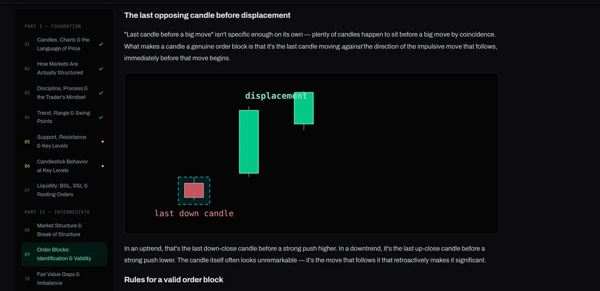
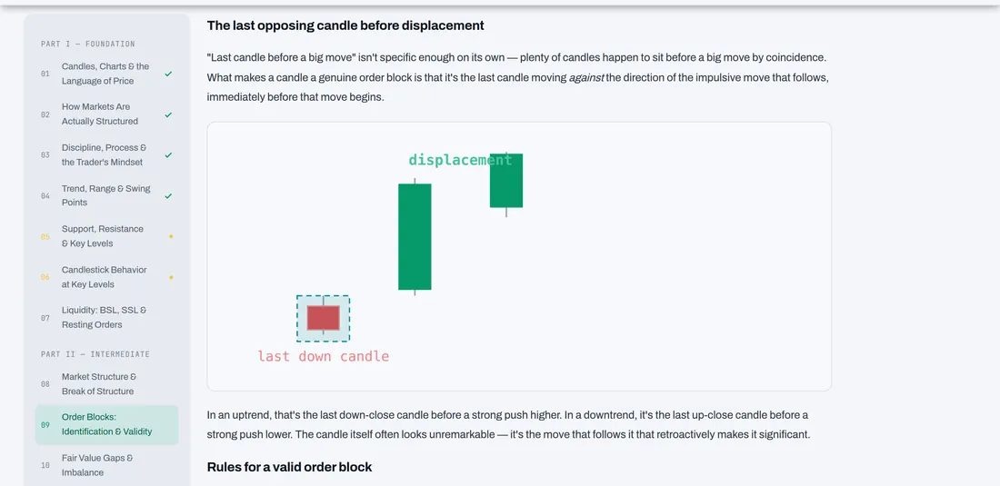
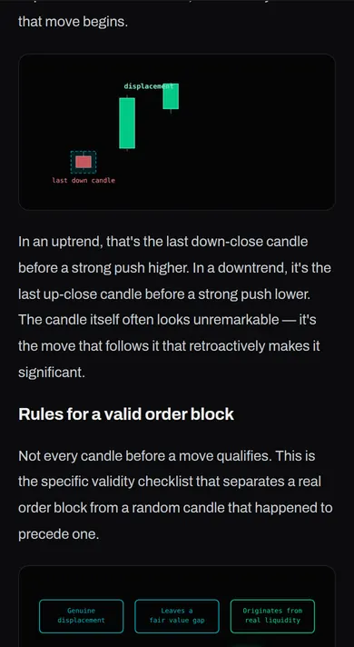
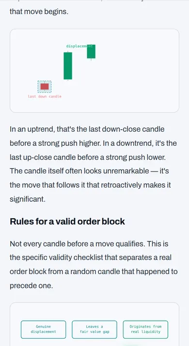
- 64chapters
- 348lessons
- 9free articles
- 14glossary terms
- 2cheat sheets
- 2specialist tracks
A path from beginner to advanced
Follow the chapters in order, or jump to the level that fits you.
- 10%
- 20%
Intermediate
Break of structure, order blocks, fair value gaps, sweeps and killzones.
Start at chapter 08 - 30%
Pick a course, a guide or a sheet
Swipe on a phone, or scan the grid on a desktop.
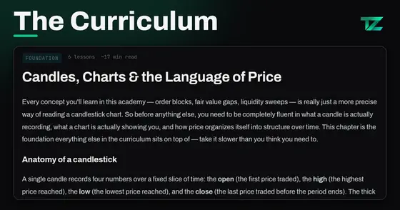
Core curriculumICT and smart money from candles to execution, in a deliberate order.42 chapters · 252 lessons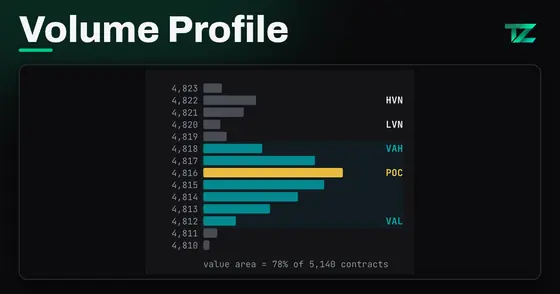
Volume Profile & Order FlowAuction theory, profiles, VWAP, the book, footprint and delta.12 chapters · specialist track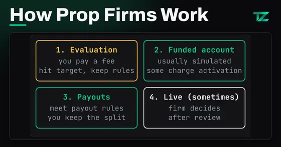
Prop Firm MasteryHow firms work, how to vet one, the rules, and staying funded.10 chapters · specialist track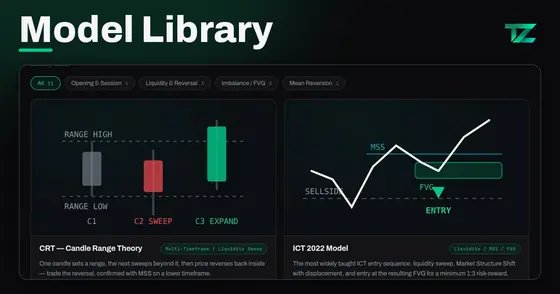
Trading modelsPlaybooks with the conditions, entry criteria and a walkthrough.11 models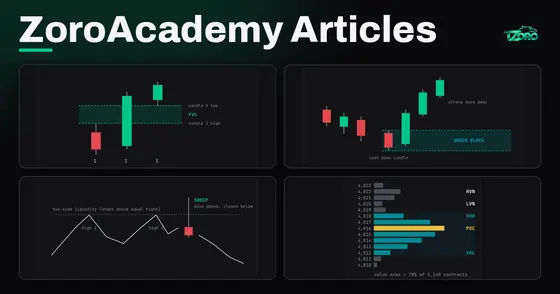
ArticlesPlain-English guides you can read without an account.9 articles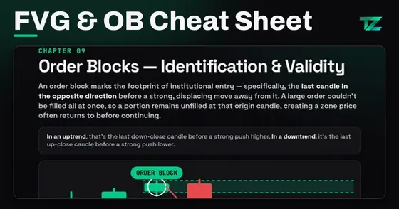
Cheat sheetsFree printable rules: FVG & Order Block, and Prop Firm.2 sheetsGo deep on what you trade
Structure, liquidity, order blocks, gaps and SMT, the core of the curriculum.
- 04Trend, Range & Swing Points
- 07Liquidity: BSL, SSL & Resting Orders
- 08Market Structure & Break of Structure
- 09Order Blocks: Identification & Validity
- 10Fair Value Gaps & Imbalance
- 12Liquidity Sweeps & Stop Hunts
- 13Killzones & Session Timing
- 18Introduction to SMT Divergence
Auction theory, profiles, VWAP, the order book, footprint and delta.
- VP-01Auction Market Theory: How Markets Find Value
- VP-02Market Profile & TPO Charts
- VP-03Volume Profile Anatomy: POC, Value Area, HVN & LVN
- VP-04Profile Shapes & Day Types
- VP-05Session, Composite & Fixed-Range Profiles
- VP-06VWAP, Anchored VWAP & Deviation Bands
- VP-07Order Flow Foundations: Orders, the Book & Matching
- VP-08Footprint Charts & Delta
How firms make money, how to vet one, the rules, and the funded stage.
- PF-01What Prop Firms Are & How They Make Money
- PF-02Futures vs Forex/CFD Firms & the Regulatory Landscape
- PF-03How to Vet a Prop Firm
- PF-04The Rules Deep Dive
- PF-05Major Firms Compared (as of September 2026)
- PF-06Passing the Evaluation: Sizing, Risk Plan & Frequency
- PF-07The Funded Stage: Buffers, Payouts & Withdrawals
- PF-08Psychology & Failure Modes
Process before prediction, and the psychology behind the failure modes.
Read the prop firm rules guide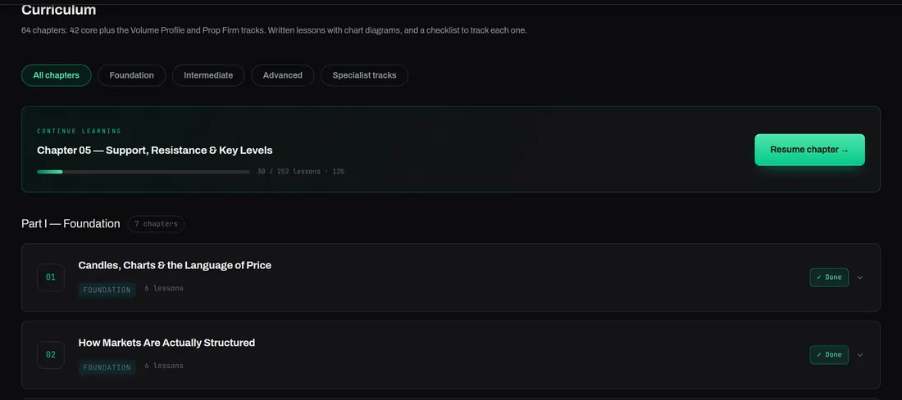
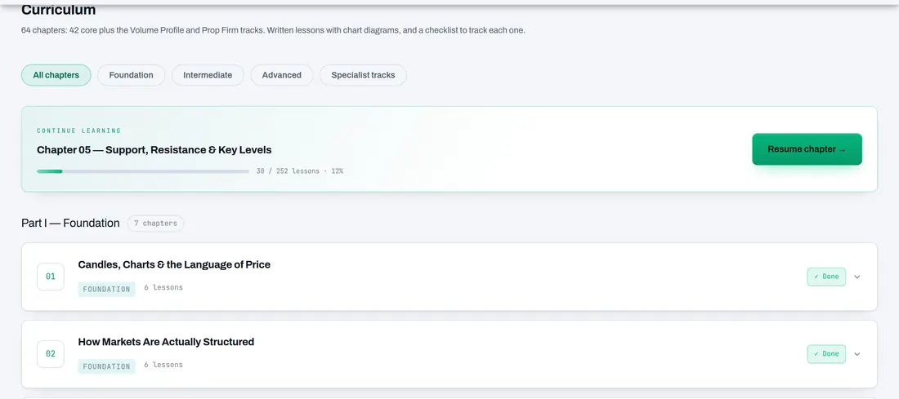
Look it up, print it, practise it
Glossary
14 core terms, each tied to the chapter that teaches it.
Cheat sheets
Free printable rules.
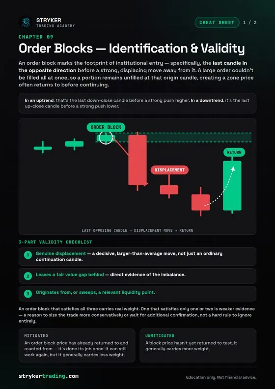
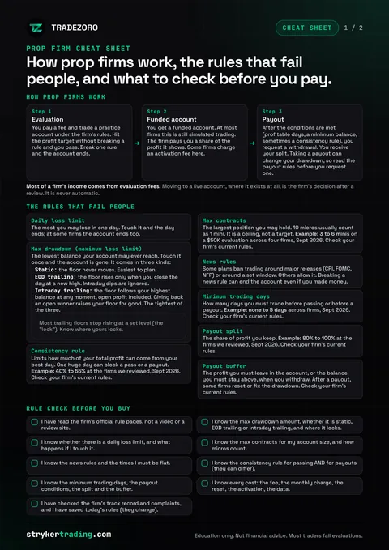
Trading models
11 playbooks with entry criteria and a walkthrough.
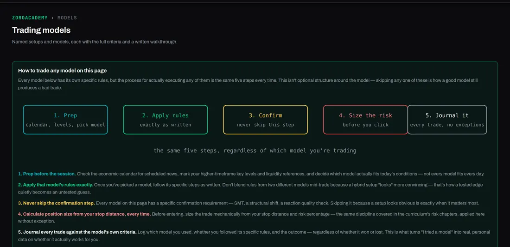
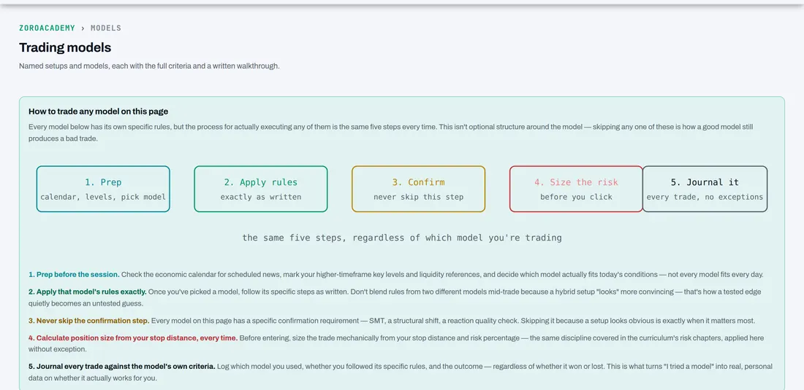
Sample viewIndicator guides
How each chart indicator works and how to read it, with its inputs explained.
Open the guidesFind a lesson in seconds
Search 64 chapters and 348 lessons, plus articles, glossary terms and models.
Order blocks explained
What an order block is, what makes one valid, and how it combines with liquidity. Read the free guide, then study chapters 09 and 21 in the curriculum.
Before you start
Is ZoroAcademy free?
How long does it take?
Do I need any experience?
Is this financial advice?
Does TradeZoro place trades for me?
Where do I practise what I learn?
Open chapter 01 and start reading.
Free with an account. Pick up where you stopped on any device.
Education only. Not financial advice. Trading carries a high level of risk and may not be suitable for everyone.